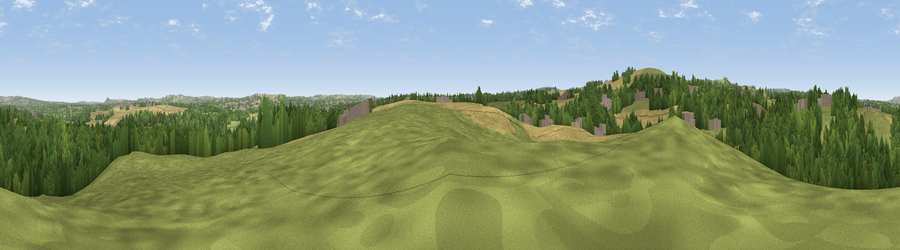

Viewpoint near Kimblesworth
#30225 in England · top 65% of its area beats it · near KimblesworthThe view, rendered

A 360° render of this exact spot computed from the terrain model, tree cover and land cover — summer colours, afternoon light, calibrated against photographs of famous viewpoints. Real trees, hedges and buildings will differ in detail.
The panorama
Grey silhouette: terrain skyline in each direction (720 bearings, Earth curvature and refraction included). Dashed green: skyline with trees (+15 m) and buildings (+8 m) as obstacles. Blue strip: how far the ground is visible on each bearing.
Where the view opens
Wedge length = distance to the farthest visible ground on that bearing (vegetation-aware). Rings at 10, 25 and 50 km.
What fills the view
44% grassland · 33% woodland · 19% cropland · 4% built-up
Angular shares of the visible panorama (visual magnitude), not map area. Landscape diversity 0.51 (0–1 Shannon).
Key numbers
More beautiful places nearby
The staircase of upgrades: each row has a higher view potential than everything closer. Driving times are estimates from straight-line distance, calibrated against real road routing — check an actual route before setting out.
| Place | Direction | Drive | Score |
|---|---|---|---|
| Viewpoint near Kimblesworth | W · 2 km | ~4 min | 62.4 |
| Viewpoint near Sacriston | WSW · 2 km | ~5 min | 66.4 |
| Viewpoint near Edmondsley | WNW · 4 km | ~9 min | 72.3 |
| Viewpoint near Edmondsley | W · 5 km | ~10 min | 72.6 |
| Penshaw Hill | NE · 10 km | ~19 min | 75.1 |
| Viewpoint near Houghton-le-Spring | ENE · 11 km | ~21 min | 76.0 |
| Viewpoint near Sunniside | NNW · 12 km | ~22 min | 77.6 |
| Pontop Pike | WNW · 13 km | ~24 min | 77.8 |
54.82006, -1.58483 · source: screening · position refined by local search. Computed location — check access rights before visiting.